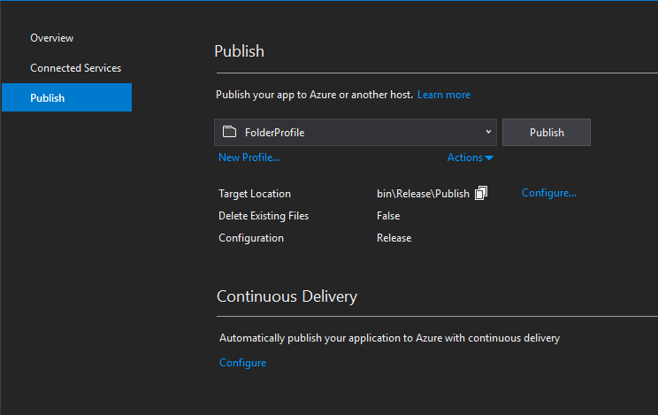
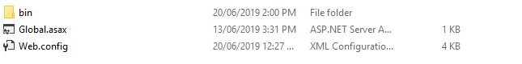
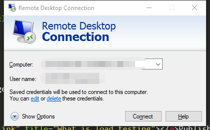
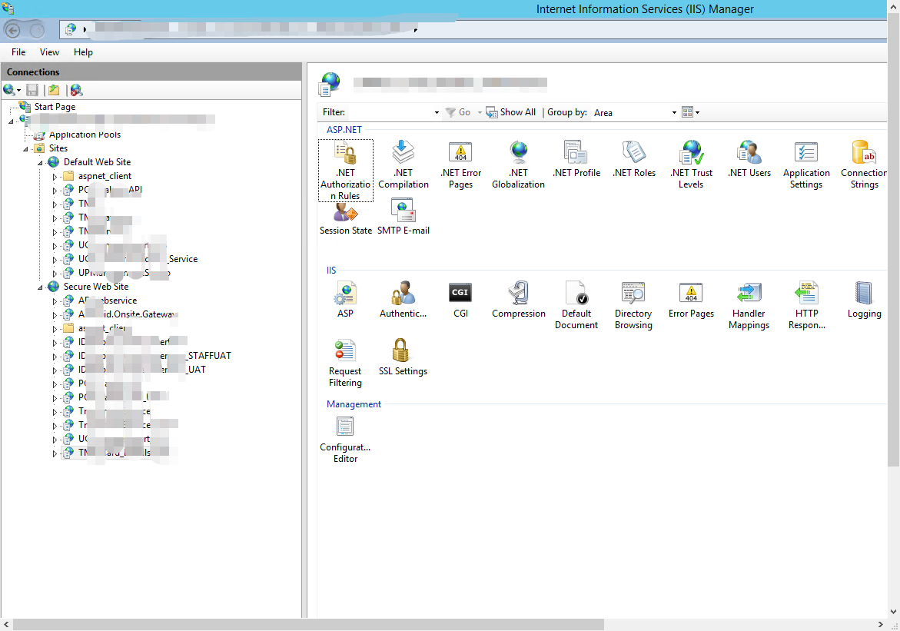
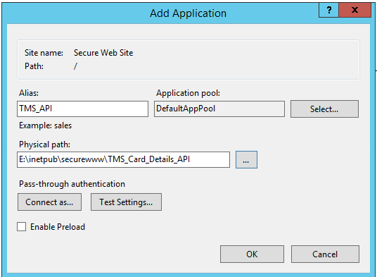
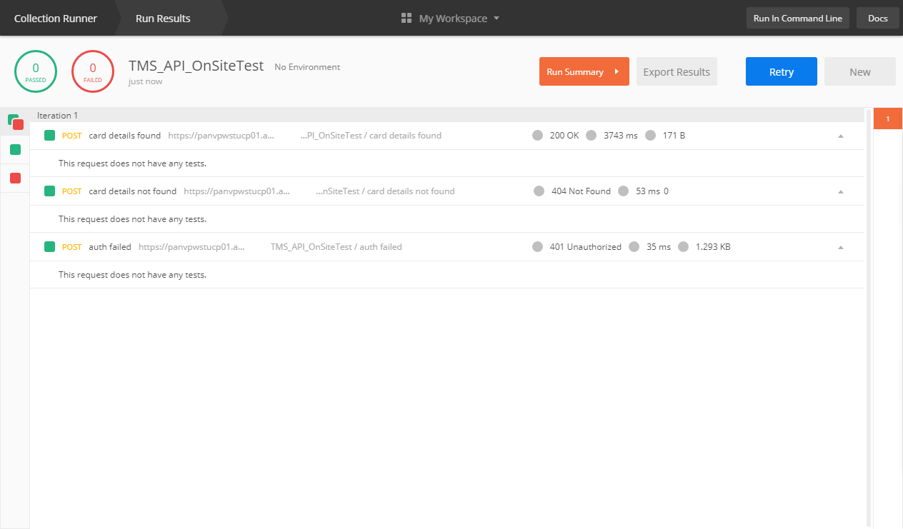

Deploy API to client IIS manager
Jun 20, 2019
Publish API using visual studio
API 完成之后，我们还需要把它deploy到client server里。所以我们先用visual studio publish它
go to Build->Publish API, 然后点publish，记住publis的路径
这些文件就是一会要copy到client server的文件，也就是api
用remote desktop连接到client server
这个就是client server的IIS manager了，可以看到已经有很多API和app在列表中了
接下来新建一个app connection，路径上新建一个文件夹，把刚才的api文件放进去
更改一下web.config，连接到正确的client database，database name也要一致
测试一下，api有反应，那么就算deploy成功了
